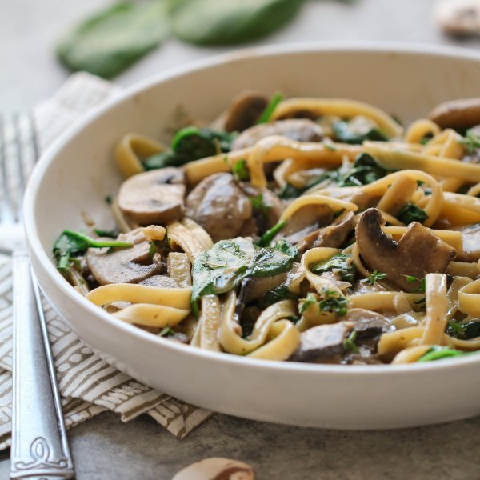

Creamy Vegan Mushroom Stroganoff with Thyme & Baby Spinach

Total Time
30 min
Nutrition (per serving)
713.4 kcalCalories
23.7 gProtein
95.1 gCarbs
29.7 gFat
Full nutrition table
| Calories | 713.4 kcal |
| Total fat | 29.7 g |
| Saturated fat | 19.1 g |
| Trans fat | 0 g |
| Cholesterol | 0 mg |
| Sodium | 99.1 mg |
| Carbohydrates | 95.1 g |
| Fiber | 8.6 g |
| Sugars | 13.4 g |
| Protein | 23.7 g |
| Potassium | 1441.8 mg |
| Calcium | 124.3 mg |
| Iron | 5.8 mg |
| Vitamin A | 6.7 IU |
| Vitamin C | 31 mg |
| Vitamin D | 11.9 IU |
Cookware
Ingredients
- 1 (5 oz) pkgbaby spinach
- 16 fl ozchicken or vegetable broth
- 1 (13.5 fl oz) cancoconut milk
- 12 ozfettuccine pasta
- 1 small pkgfresh thyme
- 4 clovesgarlic
- 1 ½ lbwhite mushrooms
- 2 mediumyellow onions
- balsamic vinegar
- black pepper
- cornstarch
- extra virgin olive oil
- garlic powder
- onion powder
- paprika
- salt
- soy sauce
Steps
- Fill a large pot halfway with water, cover, and bring to a boil. Uncover, add salt and pasta, and stir for a few seconds. Cook until desired firmness, 8-10 minutes.2 tsp salt
12 oz fettuccine pasta - Meanwhile, preheat a large skillet over medium heat.
- Peel and small dice the onions.2 medium yellow onions
- Once the skillet is hot, add oil and swirl to coat the bottom.2 tbsp extra virgin olive oil
- Add the onions to the skillet; cook, stirring frequently, until softened, 4-5 minutes.
- Wash and slice mushrooms. Peel and mince garlic.1 ½ lb white mushrooms
4 cloves garlic - Add mushrooms, garlic, and spices to the skillet. Cook, stirring frequently, until mushrooms are softened, 5-6 minutes.1 tsp garlic powder
1 tsp onion powder
1 tsp paprika
1 tsp salt
½ tsp black pepper - In a medium bowl, whisk together the coconut milk and cornstarch.1 (13.5 fl oz) can coconut milk
¼ cup cornstarch - Add coconut milk mixture, broth, soy sauce, and vinegar to the skillet. Stir and bring to a boil over high heat. Reduce heat to medium-low and cook, stirring occasionally, until the sauce has thickened, 6-7 minutes.16 fl oz (2 cups) chicken or vegetable broth
2 tbsp soy sauce
1 tbsp balsamic vinegar - Wash and dry thyme. Slide leaves off the stems; discard the stems. Add leaves to the skillet and stir to combine.1 small pkg fresh thyme
- Wash and dry the spinach (skip if it came pre-washed). Add spinach to the skillet in handfuls, waiting for the spinach to wilt slightly before adding the next handful.1 (5 oz) pkg baby spinach
- Drain pasta and add to skillet with the sauce. Toss to combine.
- To serve, divide the pasta and sauce between plates. Enjoy!